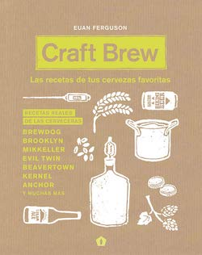

Brew: Fabrica tu propia Cerveza - James Morton
Libro sobre elaboración de cerveza casera dirigido a principiantes y personas que no lleven mucho tiempo haciendo cerveza en casa, aunque también incluye secciones más avanzadas con mucha información.
Incluye varias partes: tipos de cerveza, equipos básicos y avanzados, ingredientes de la cerveza, proceso de elaboración que incluye completa descripción del proceso dejándolo claro y fácil de seguir, defectos que pueden aparecer y cómo solucionar, etc. Este libro de cerveza incluye recetas de los estilos de cervezas más conocidos tanto europeos como americanos.
Craft Brew: Las recetas de tus Cervezas Favoritas - Euan Ferguson
Libro de cerveza con 57 cervezas para homebrewers de las mejores cerveceras del mundo. Recetas de conocidas marcas de cerveza, con todo detalle y adaptadas a un formato casero.
La primera parte del libro está dedicada a los ingredientes, equipo y proceso de elaboración e incluye consejos muy útiles para el cervecero casero.
El resto del libro, incluye recetas de cervezas conocidas, con una descripción técnica, notas de cata y también datos curiosos del nombre de cada cerveza.
Al final del libro hay un glosario de términos muy útil para el cervecero casero.
Cómo Elaborar Cerveza Casera - Con más de 100 recetas - G. Hughes
Libro para hacer cerveza artesanal muy útil para todo aquel que desee iniciarse en el mundo de la cerveza. Con indicaciones y consejos prácticos para los no iniciados, así como relación de elementos para montar un equipo.
Habla un poco de todo el proceso e ingredientes de la cerveza y posteriormente ofrece unas 100 recetas de todo tipo de cervezas. Para elaborar cerveza desde un sencillo kit hasta montar su propia microcervecería.
Incluye las técnicas clave para la elaboración de cerveza gracias a instrucciones detalladas acompañadas con fotografías.
La Cerveza... Poesía Líquida. Un manual para cervesiáfilos - S. Huxley
Este manual de cerveza explica detalladamente el proceso de elaboración, incluso artesanal, de la cerveza y cuantos factores han de tenerse en cuenta para llevarlo a buen fin. También ofrece información sobre las cervezas disponibles en el mercado y para entender las diferencias entre sus diversos tipos, así como consejos para servirla y beberla apreciando sus calidades y sus defectos, para organizar catas o concursos y para combinarla con la comida, entre otros asuntos de interés para todo cervesiáfilo o buen aficionado a esta bebida.
Libro de cerveza muy extenso y muy completo que va un poco más allá de un manual básico.
Maestro cervecero: Guía para elaborar tu propia cerveza - Alfredo Domene
Libro de cómo hacer cerveza escrito por por un cervecero casero que convirtió su afición en su forma de vida.
La primera parte incluye la historia de la cerveza, cerveza artesana vs cerveza industrial y la clasificación y estilos de cerveza.
La segunda parte se centra en la elaboración casera de cerveza: ingredientes, equipo necesario, fases del proceso de elaboración, receta y recomendaciones para principiantes.
La última parte incluye maridaje de la cerveza y la comida y recetas para cocinar con cerveza.